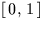

Conversion from universal time UT1 to Greenwich Mean
sidereal time, with rounding errors minimized.
CALL:
D = sla_GMSTA (DATE, UT1)
GIVEN:
DATE
D
UT1 date as Modified Julian Date (integer part
of JD-2400000.5)
UT1
D
UT1 time (fraction of a day)
RETURNED:
sla_GMST
D
Greenwich mean sidereal time (radians)
NOTES:
1.
The algorithm is derived from the IAU 1982 expression
(see page S15 of the 1984 Astronomical Almanac).
2.
There is no restriction on how the UT is apportioned between the
DATE and UT1 arguments. Either of the two arguments could, for
example, be zero and the entire date+time supplied in the other.
However, the routine is designed to deliver maximum accuracy when
the DATE argument is a whole number and the UT1 argument
lies in the range , or vice versa.
3.
See also the routine sla_GMST, which accepts the UT1 as a single
argument. Compared with sla_GMST, the extra numerical precision
delivered by the present routine is unlikely to be important in
an absolute sense, but may be useful when critically comparing
algorithms and in applications where two sidereal times close
together are differenced.